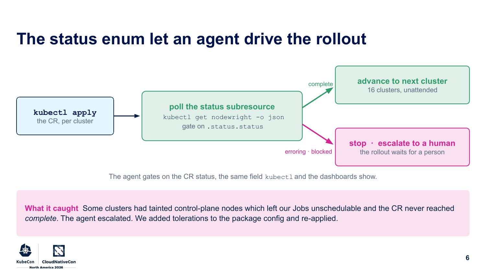

NVIDIA patched ~5,600 nodes in 30 minutes:
an agent drove it by reading one status field.

16 clusters~5,600 nodes converged in 30 minutes, agent-driven
2 CVEsdays apart, one controller, never changed
kubectl get nodewright -o json
# gate on .status.status
complete · in_progress · erroring
blocked · paused · unknown
“The next CVE is a YAML change.”